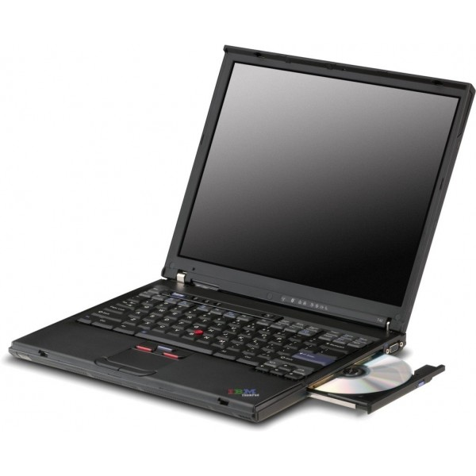

September 13, 2017
I’ve taken quite a liking to Manjaro. All the random tasks I’ve used it for have turned out extremely well. Enough so that I want to go beyond those very directed needs and do a general review. And I’ll start out by installing Manjaro on my IBM/Lenovo T42.

Which is a little late since they just announced deprecating 32-bit / i686 support. So, since I did all this work over a few months, I figure I might as well put out this post. Maybe historians will appreciate it. :-)
The summation is though I had high hopes I think the the older hardware only has specialized uses with Manjaro. Read through or skip to the conclusion for more details.
Installation
The initial installations on my test laptops have worked out well but with one flaw. The images for installing LXQT have crashed. So instead, I’ve used the i3 install images and added the LXQT desktop afterwards. To be honest, I did not test the LXQT install on the T42, but on other semi-production laptops that I have in use. To make the process simple, I created this script. It also updates the system and installs some packages I like. Oh, a hint for newbies, install wget: sudo pacman -S wget. Once wget is installed it’s easy to download the bash script.
Some other thoughts or comments on the installation… On the T42, first thing was the install window was “pixelated” most of the time. But move your mouse over it every once in awhile and wait patiently; eventually it’ll change to the “all done, reboot?” screen.
After installation, there were lots of wireless SSIDs (I live in a condo complex), but the T42 would only connect to WEP enabled access points. That’s almost certainly because of the wifi card in the T42; probably something with the firmware. I do wish the wireless manager had either marked or not listed the SSIDs that it’s known I can’t connect to…
One last thing on my sorta customized installation process. There is no “Windows” key on the T42, so no “mod key” to open windows. To get around that I used CTRL-ALT-F2 to switch to a non-X terminal (virtual console) and change “Mod4” (windows key) to “Mod1” (ALT key) in ~/.i3/config. After that, back in i3, I could open a window to download and run the above mentioned script.
From The Beginning
After the reboot, I selected the LXQT session and logged in for the first time (remember the last time was using a virtual console). The first thing I was asked was to configure the power management. I almost always change what happens on low power or when the lid is closed. But that is my taste, so modify to suite your taste.
The next thing I did was double check updates. It was actually almost a month between the installation and this section. Before I could even download and run my update script, I got a notification about updates. That went very smoothly, though I could really “feel” the slow wifi and slow hard drive. Also, some light browsing was fine at the same time, but anymore more started to feel laggy.
My biggest surprise is the variety of how long it takes to do things. Bootup is pretty typical without an SSD. Manjaro still “feels” faster than other OSs, especially the original Windows XP. The QTerminal app loaded almost instantaneously; moving around in PCManFM-Qt worked fine; opening, editing, etc. text files in Mousepad was fast. All that is in contrast to the seconds for Firefox and Chromium. Read on for more whoa’s….
Some Early Configuration
One thing I’ve found helpful is to choose your DE settings wisely. It takes a bit of experimentation to figure out what you like versus what is good. But the following is what I usually do to LXQT or LXDE upon installation:
- Go to just one Virtual Desktop and remove the Pager in the taskbar.
- Choose the Clearlooks theme where I can; or any Light/Netbook/etc where I can’t.
- Turn off Animation where I can.
- Turn off window contents when resizing or moving.
Standard Apps - Browsing
The install script above does (try to) install Google Chrome. But since the T42 is a 32-bit processor, there is no Google Chrome. So I then installed Chromium (via pacman); along with freshplayerplugin (via yaourt; it takes a long time with dependencies). Firefox was already installed; I installed midori and QupZilla.
One strong suggestion - don’t log into Chromium! I’ve experienced this on the Raspberry Pi 2 and 3 as well. Chromium starts to lag big time after logging into the browser. Even after letting everything sync, it is quite slow. My guess is that since the RPi’s are quad core CPUs w/ 1GB RAM and the T42 is single core CPU w/ 2GB RAM, I’m guessing the issue is both a CPU and memory thing.
I rebooted to see if that would help, and it did a bit. But eventually Chromium crashed the whole OS while I was logged into Chromium. After deleting the ~/.config/chromium directory, no problem with basic browsing. On the other hand, streaming content from Vimeo, YouTube, etc. was still laggy; the sound and video would fall out of sync pretty much from the start. And to be fair, I know it’s the T42; the same thing happens in Firefox. Logging into GMail or Google Drive did fair better on its own. But having one tab for GMail, one for Google Drive and another for a document was just shy of being painfully slow.
Still, sometimes on “content” heavy sites or with too many tabs open, Chromium would crash or even bring the whole OS down again. Also, making Chromium’s window maximized or even just altering the dimensions freaked it out. Firefox was generally better; I could maximize it but it still was problematic after extended or too “intense” use. The tell-tale sign was the window (not borders) getting all “pixelated”.
Sadly, midori got all pixelated within a page or two of browsing; and QupZilla started pixelated and then just crashed within 10 seconds on the startup screen. :-(
Standard Apps - Office Suite
My “go to” suite is the usual LibreOffice, but I wasn’t holding out for it. Starting up LibreOffice Writer actually wasn’t that bad. It was faster than Chromium and Firefox. Typing a few paragraphs worked out well enough. I then wanted to download a document I use for testing. Wow, Chromium tried to start for a good 30 seconds and then displayed the not responding message. I killed that window and went to Firefox instead. A bit better; very slow, but I got to Adventures in Tech website, opened the document in Google Drive (and did not log into Google Drive) and downloaded it in various formats.
The rest of me playing around was with nothing but LibreOffice and PCManFM-Qt open. Things worked well at first with the 41 page test document I had downloaded. I, of course, tried ODT first. It opened quickly enough and I could navigate around. It was not the fastest, but editing was fine, including highlighting, commenting, etc.
Opening a DOCX downloaded from a Google Doc is not the best test. Who knows what craziness Microsoft adds into files its own office suite creates that it never tells anyone. They probably find it easier to shift blame, or am I doing that now…? Either way, doing the same stuff with the DOCX as with the ODT worked the same.
An interesting piece of information. AbiWord is also available, and considered a better lightweight editor; which I tend to agree with. What is weird is that the top of the file “flickers”, I guess one could also say it “tears” a lot. With no activity is goes away, but whenever moving the cursor or typing, it comes back. That of course is impossible to work with regularly.
Another alternative office app is Gnumeric. This app did not have any tearing. And it worked well on simple spreadsheets.
For reading PDFs, the “epdfview” app is installed. It seems to not have been updated in a long time. The website seems to redirect to a game. Anyways, it handles the PDF version quite well, if a bit slow on drawing pages with pictures.
Media Playback
This covers two types of things. First is tunage, or playing audio. The biggest disclaimer is I did not load my entire collection on the T42. So this experience is with only a few albums. My favorite player is either Amarok or Clementine (a fork of Amarok before the major UI change). I did not bother with Amarok, as I know it is heavy. But, without anything else running, Clementine worked quite well. It even worked well with LibreOffice Writer running at the same time. Add in going to GMail.com, and, well, still not that bad.
Second is playing movies, and I usually use VLC for that purpose. Despite the streaming of movies being abysmal, playing a locally stored video was a pleasant surprise. VLC did a great job of keeping video in-sync with audio. The video, though, had that look it has where I know frames are being dropped to keep up. So if I just “had“ to watch something that I have local on the computer, I would. But I would not make a habit of watching videos on the T42. The Parole media player that is part of XFCE worked better. If I was travelling with the T42 it’d be tolerable.
Conclusion
Like many old devices, one can find uses if they try. I still use the original Nook Color just for Google Play Books and Overdrive with my local library. This old IBM T42, though, will have to be for specific uses that fits its computing power. The web is, well, too graphic/video heavy and expects more network traffic then the T42 was built to do. I think simple workstation for music and/or editing files would be okay. Perhaps a media player and an easily moved test or development server.
Two big questions in my mind now. First, I feel I have to do another review soon with the T42. Or maybe Manjaro on the XPS M1530. The other is how much longer any distro will be keep the T42 usable. It is limited on the multi-tasking it can do. And new versions of software are hardly ever for optimization alone. They may be a bit, but they also bring in a lot of new features. Which usually means more resources are necessary.